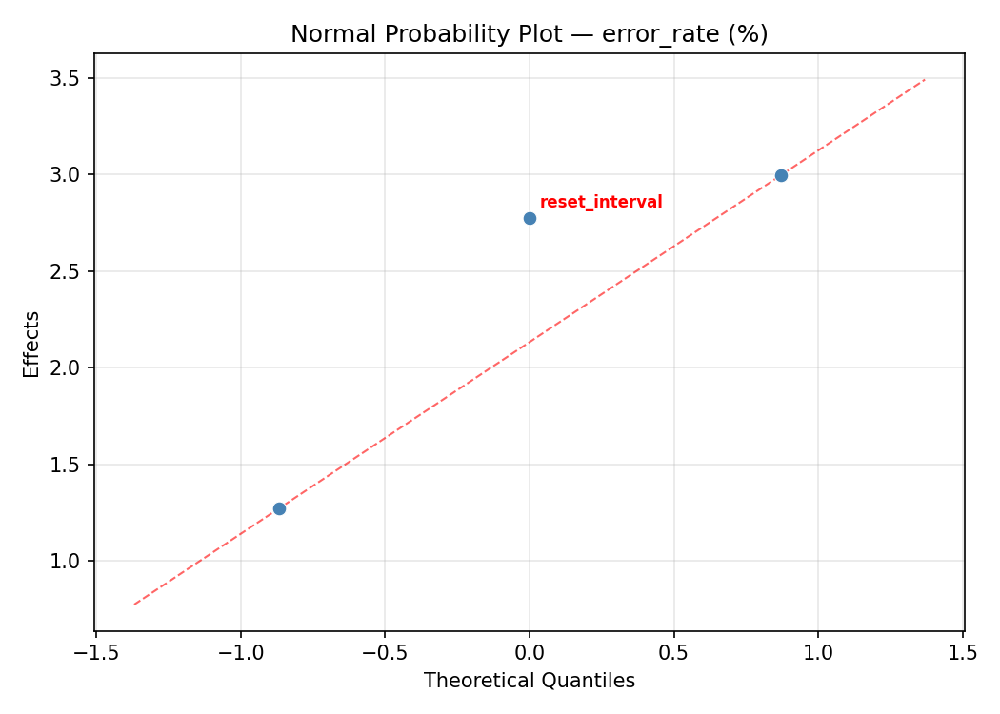
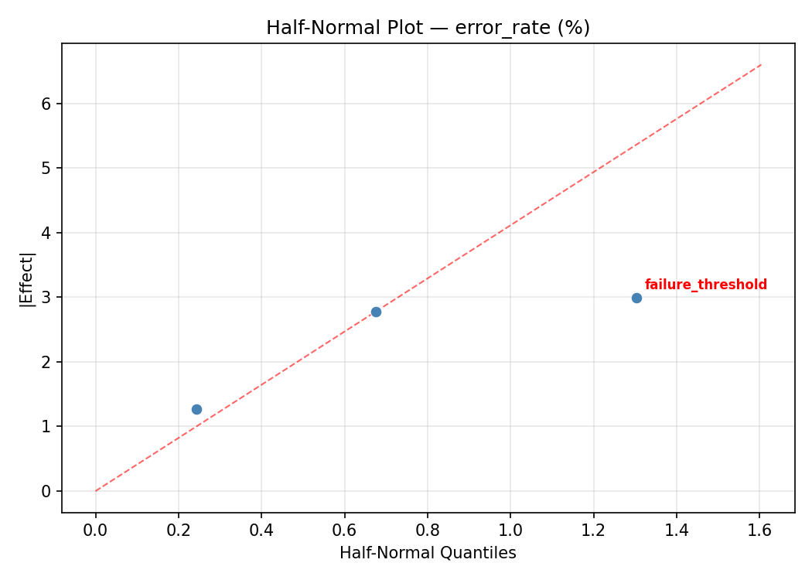
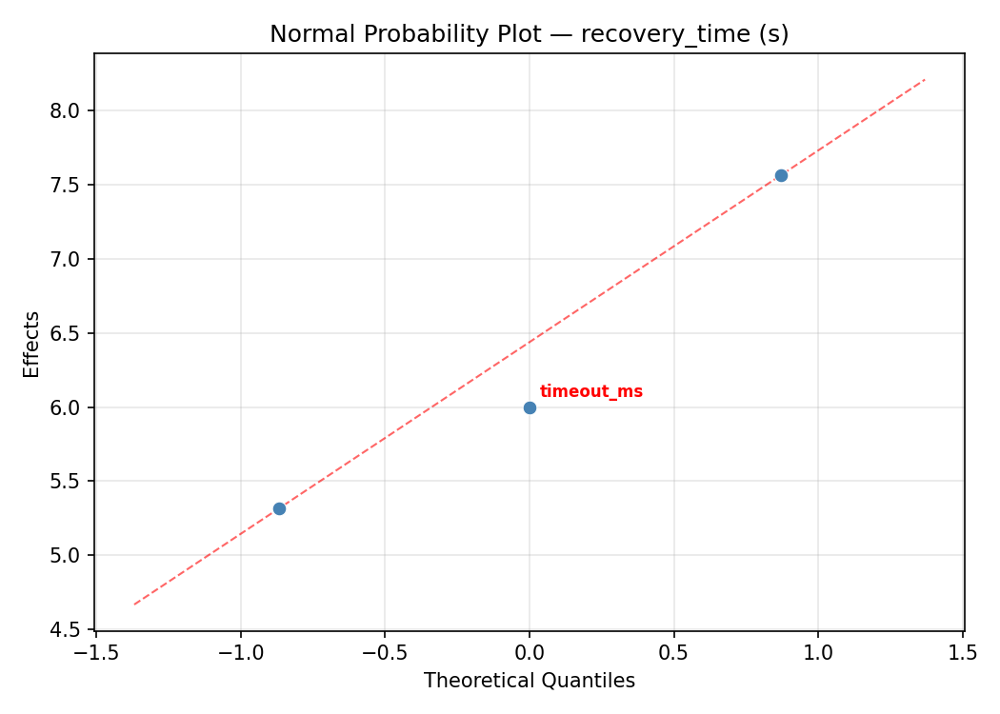
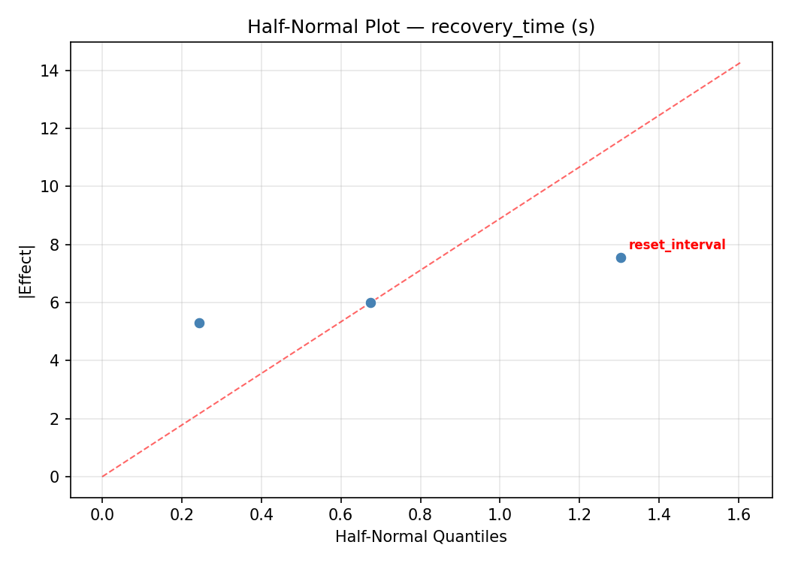

Summary
This experiment investigates microservice circuit breaker. Box-Behnken design to tune circuit breaker thresholds for error rate and recovery time.
The design varies 3 factors: failure threshold (count), ranging from 3 to 15, timeout ms (ms), ranging from 500 to 5000, and reset interval (s), ranging from 5 to 60. The goal is to optimize 2 responses: error rate (%) (minimize) and recovery time (s) (minimize). Fixed conditions held constant across all runs include backend pool size = 10, health check interval = 5.
A Box-Behnken design was chosen because it efficiently fits quadratic models with 3 continuous factors while avoiding extreme corner combinations — requiring only 15 runs instead of the 8 needed for a full factorial at two levels.
Quadratic response surface models were fitted to capture potential curvature and factor interactions. The RSM contour plots below visualize how pairs of factors jointly affect each response.
Key Findings
For error rate, the most influential factors were timeout ms (67.6%), reset interval (17.1%), failure threshold (15.4%). The best observed value was 2.25 (at failure threshold = 15, timeout ms = 2750, reset interval = 5).
For recovery time, the most influential factors were timeout ms (35.6%), failure threshold (33.3%), reset interval (31.1%). The best observed value was 8.3 (at failure threshold = 9, timeout ms = 500, reset interval = 5).
Recommended Next Steps
- Run confirmation experiments at the predicted optimal settings to validate the model.
- Consider whether any fixed factors should be varied in a future study.
Experimental Setup
Factors
| Factor | Low | High | Unit |
|---|
failure_threshold | 3 | 15 | count |
timeout_ms | 500 | 5000 | ms |
reset_interval | 5 | 60 | s |
Fixed: backend_pool_size = 10, health_check_interval = 5
Responses
| Response | Direction | Unit |
|---|
error_rate | ↓ minimize | % |
recovery_time | ↓ minimize | s |
Configuration
{
"metadata": {
"name": "Microservice Circuit Breaker",
"description": "Box-Behnken design to tune circuit breaker thresholds for error rate and recovery time"
},
"factors": [
{
"name": "failure_threshold",
"levels": [
"3",
"15"
],
"type": "continuous",
"unit": "count"
},
{
"name": "timeout_ms",
"levels": [
"500",
"5000"
],
"type": "continuous",
"unit": "ms"
},
{
"name": "reset_interval",
"levels": [
"5",
"60"
],
"type": "continuous",
"unit": "s"
}
],
"fixed_factors": {
"backend_pool_size": "10",
"health_check_interval": "5"
},
"responses": [
{
"name": "error_rate",
"optimize": "minimize",
"unit": "%"
},
{
"name": "recovery_time",
"optimize": "minimize",
"unit": "s"
}
],
"settings": {
"operation": "box_behnken",
"test_script": "use_cases/28_microservice_circuit_breaker/sim.sh"
}
}
Experimental Matrix
The Box-Behnken Design produces 15 runs. Each row is one experiment with specific factor settings.
| Run | failure_threshold | timeout_ms | reset_interval |
|---|
| 1 | 9 | 500 | 5 |
| 2 | 9 | 2750 | 32.5 |
| 3 | 15 | 2750 | 60 |
| 4 | 15 | 2750 | 5 |
| 5 | 9 | 2750 | 32.5 |
| 6 | 9 | 2750 | 32.5 |
| 7 | 3 | 2750 | 60 |
| 8 | 15 | 500 | 32.5 |
| 9 | 9 | 500 | 60 |
| 10 | 15 | 5000 | 32.5 |
| 11 | 3 | 2750 | 5 |
| 12 | 9 | 5000 | 60 |
| 13 | 3 | 500 | 32.5 |
| 14 | 3 | 5000 | 32.5 |
| 15 | 9 | 5000 | 5 |
Step-by-Step Workflow
1
Preview the design
$ python doe.py info --config use_cases/28_microservice_circuit_breaker/config.json
2
Generate the runner script
$ python doe.py generate --config use_cases/28_microservice_circuit_breaker/config.json \
--output use_cases/28_microservice_circuit_breaker/results/run.sh --seed 42
3
Execute the experiments
$ bash use_cases/28_microservice_circuit_breaker/results/run.sh
4
Analyze results
$ python doe.py analyze --config use_cases/28_microservice_circuit_breaker/config.json
5
Get optimization recommendations
$ python doe.py optimize --config use_cases/28_microservice_circuit_breaker/config.json
6
Multi-objective optimization
With 2 competing responses, use --multi to find the best compromise via Derringer–Suich desirability.
$ python doe.py optimize --config use_cases/28_microservice_circuit_breaker/config.json --multi
7
Generate the HTML report
$ python doe.py report --config use_cases/28_microservice_circuit_breaker/config.json \
--output use_cases/28_microservice_circuit_breaker/results/report.html
Features Exercised
| Feature | Value |
|---|
| Design type | box_behnken |
| Factor types | continuous (all 3) |
| Arg style | double-dash |
| Responses | 2 (error_rate ↓, recovery_time ↓) |
| Total runs | 15 |
Analysis Results
Generated from actual experiment runs using the DOE Helper Tool.
Response: error_rate
Top factors: timeout_ms (67.6%), reset_interval (17.1%), failure_threshold (15.4%).
ANOVA
| Source | DF | SS | MS | F | p-value |
|---|
| Source | DF | SS | MS | F | p-value |
| failure_threshold | 2 | 1.7566 | 0.8783 | 0.225 | 0.8031 |
| timeout_ms | 2 | 41.7128 | 20.8564 | 5.353 | 0.0335 |
| reset_interval | 2 | 2.4097 | 1.2048 | 0.309 | 0.7424 |
| Lack | of | Fit | 6 | 39.3567 | 6.5594 |
| Pure | Error | 2 | 7.7922 | | |
| Error | 8 | 47.1489 | 3.8961 | | |
| Total | 14 | 93.0280 | 6.6449 | | |
Pareto Chart

Main Effects Plot

Normal Probability Plot of Effects

Half-Normal Plot of Effects

Model Diagnostics

Response: recovery_time
Top factors: timeout_ms (35.6%), failure_threshold (33.3%), reset_interval (31.1%).
ANOVA
| Source | DF | SS | MS | F | p-value |
|---|
| Source | DF | SS | MS | F | p-value |
| failure_threshold | 2 | 297.4013 | 148.7006 | 4.358 | 0.0525 |
| timeout_ms | 2 | 400.1455 | 200.0728 | 5.864 | 0.0270 |
| reset_interval | 2 | 263.9652 | 131.9826 | 3.868 | 0.0668 |
| Lack | of | Fit | 6 | 889.7253 | 148.2876 |
| Pure | Error | 2 | 68.2400 | | |
| Error | 8 | 957.9653 | 34.1200 | | |
| Total | 14 | 1919.4773 | 137.1055 | | |
Pareto Chart

Main Effects Plot

Normal Probability Plot of Effects

Half-Normal Plot of Effects

Model Diagnostics

Response Surface Plots
3D surfaces fitted with quadratic RSM. Red dots are observed data points.
error rate failure threshold vs reset interval

error rate failure threshold vs timeout ms

error rate timeout ms vs reset interval

recovery time failure threshold vs reset interval

recovery time failure threshold vs timeout ms

recovery time timeout ms vs reset interval

Multi-Objective Optimization
When responses compete, Derringer–Suich desirability finds the best compromise.
Each response is scaled to a 0–1 desirability, then combined via a weighted geometric mean.
Overall Desirability
D = 0.7261
Per-Response Desirability
| Response | Weight | Desirability | Predicted | Dir |
|---|
error_rate |
1.5 |
|
4.73 0.6839 4.73 % |
↓ |
recovery_time |
1.0 |
|
15.70 0.7944 15.70 s |
↓ |
Recommended Settings
| Factor | Value |
|---|
failure_threshold | 3 count |
timeout_ms | 2750 ms |
reset_interval | 5 s |
Source: from observed run #1
Trade-off Summary
Sacrifice = how much worse than single-objective best.
| Response | Predicted | Best Observed | Sacrifice |
|---|
recovery_time | 15.70 | 8.30 | +7.40 |
Top 3 Runs by Desirability
| Run | D | Factor Settings |
|---|
| #8 | 0.6887 | failure_threshold=9, timeout_ms=500, reset_interval=60 |
| #5 | 0.6080 | failure_threshold=3, timeout_ms=5000, reset_interval=32.5 |
Model Quality
| Response | R² | Type |
|---|
recovery_time | 0.2543 | linear |
Full Multi-Objective Output
============================================================
MULTI-OBJECTIVE OPTIMIZATION
Method: Derringer-Suich Desirability Function
============================================================
Overall desirability: D = 0.7261
Response Weight Desirability Predicted Direction
---------------------------------------------------------------------
error_rate 1.5 0.6839 4.73 % ↓
recovery_time 1.0 0.7944 15.70 s ↓
Recommended settings:
failure_threshold = 3 count
timeout_ms = 2750 ms
reset_interval = 5 s
(from observed run #1)
Trade-off summary:
error_rate: 4.73 (best observed: 2.25, sacrifice: +2.48)
recovery_time: 15.70 (best observed: 8.30, sacrifice: +7.40)
Model quality:
error_rate: R² = 0.1813 (linear)
recovery_time: R² = 0.2543 (linear)
Top 3 observed runs by overall desirability:
1. Run #1 (D=0.7261): failure_threshold=3, timeout_ms=2750, reset_interval=5
2. Run #8 (D=0.6887): failure_threshold=9, timeout_ms=500, reset_interval=60
3. Run #5 (D=0.6080): failure_threshold=3, timeout_ms=5000, reset_interval=32.5
Full Analysis Output
=== Main Effects: error_rate ===
Factor Effect Std Error % Contribution
--------------------------------------------------------------
timeout_ms 3.8221 0.6656 67.6%
reset_interval 0.9657 0.6656 17.1%
failure_threshold 0.8700 0.6656 15.4%
=== ANOVA Table: error_rate ===
Source DF SS MS F p-value
-----------------------------------------------------------------------------
failure_threshold 2 1.7566 0.8783 0.225 0.8031
timeout_ms 2 41.7128 20.8564 5.353 0.0335
reset_interval 2 2.4097 1.2048 0.309 0.7424
Lack of Fit 6 39.3567 6.5594 1.684 0.4184
Pure Error 2 7.7922 3.8961
Error 8 47.1489 3.8961
Total 14 93.0280 6.6449
=== Summary Statistics: error_rate ===
failure_threshold:
Level N Mean Std Min Max
------------------------------------------------------------
15 4 5.9600 1.0947 4.6500 7.1300
3 4 6.8300 4.2098 3.1800 10.5800
9 7 6.1400 2.3983 2.2500 9.1900
timeout_ms:
Level N Mean Std Min Max
------------------------------------------------------------
2750 7 7.9971 2.3178 4.6500 10.5800
500 4 4.1750 1.8735 2.2500 6.5300
5000 4 5.3650 1.6885 3.1800 7.3000
reset_interval:
Level N Mean Std Min Max
------------------------------------------------------------
32.5 7 5.9543 2.3564 3.1800 9.1900
5 4 6.9200 2.5102 4.7300 10.3700
60 4 6.1950 3.5777 2.2500 10.5800
=== Main Effects: recovery_time ===
Factor Effect Std Error % Contribution
--------------------------------------------------------------
timeout_ms 11.5214 3.0233 35.6%
failure_threshold 10.7893 3.0233 33.3%
reset_interval 10.0821 3.0233 31.1%
=== ANOVA Table: recovery_time ===
Source DF SS MS F p-value
-----------------------------------------------------------------------------
failure_threshold 2 297.4013 148.7006 4.358 0.0525
timeout_ms 2 400.1455 200.0728 5.864 0.0270
reset_interval 2 263.9652 131.9826 3.868 0.0668
Lack of Fit 6 889.7253 148.2876 4.346 0.1988
Pure Error 2 68.2400 34.1200
Error 8 957.9653 34.1200
Total 14 1919.4773 137.1055
=== Summary Statistics: recovery_time ===
failure_threshold:
Level N Mean Std Min Max
------------------------------------------------------------
15 4 37.5750 10.2226 29.3000 50.3000
3 4 30.1000 17.4641 8.3000 49.5000
9 7 26.7857 8.0993 15.7000 38.1000
timeout_ms:
Level N Mean Std Min Max
------------------------------------------------------------
2750 7 25.1286 10.3294 8.3000 41.4000
500 4 33.9250 14.2549 15.7000 50.3000
5000 4 36.6500 9.4789 29.3000 49.5000
reset_interval:
Level N Mean Std Min Max
------------------------------------------------------------
32.5 7 33.8571 12.3978 18.3000 50.3000
5 4 23.7750 14.7244 8.3000 41.4000
60 4 31.5250 5.2551 25.8000 38.1000
Optimization Recommendations
=== Optimization: error_rate ===
Direction: minimize
Best observed run: #8
failure_threshold = 15
timeout_ms = 2750
reset_interval = 5
Value: 2.25
RSM Model (linear, R² = 0.2122, Adj R² = -0.0026):
Coefficients:
intercept +6.2760
failure_threshold -0.3337
timeout_ms -1.2612
reset_interval +0.8750
RSM Model (quadratic, R² = 0.7045, Adj R² = 0.1725):
Coefficients:
intercept +5.0733
failure_threshold -0.3338
timeout_ms -1.2613
reset_interval +0.8750
failure_threshold*timeout_ms +0.7250
failure_threshold*reset_interval +0.0825
timeout_ms*reset_interval +2.1525
failure_threshold^2 -0.2992
timeout_ms^2 +2.5558
reset_interval^2 -0.0017
Curvature analysis:
timeout_ms coef=+2.5558 convex (has a minimum)
failure_threshold coef=-0.2992 concave (has a maximum)
reset_interval coef=-0.0017 negligible curvature
Notable interactions:
timeout_ms*reset_interval coef=+2.1525 (synergistic)
failure_threshold*timeout_ms coef=+0.7250 (synergistic)
Predicted optimum (from quadratic model, at observed points):
failure_threshold = 9
timeout_ms = 500
reset_interval = 5
Predicted value: 10.1662
Surface optimum (via L-BFGS-B, quadratic model):
failure_threshold = 3
timeout_ms = 4571.75
reset_interval = 5
Predicted value: 2.6382
Model quality: Good fit — general trends are captured, some noise remains.
Factor importance:
1. timeout_ms (effect: 3.8, contribution: 59.9%)
2. reset_interval (effect: 1.8, contribution: 27.3%)
3. failure_threshold (effect: 0.8, contribution: 12.7%)
=== Optimization: recovery_time ===
Direction: minimize
Best observed run: #11
failure_threshold = 9
timeout_ms = 500
reset_interval = 5
Value: 8.3
RSM Model (linear, R² = 0.1075, Adj R² = -0.1359):
Coefficients:
intercept +30.5467
failure_threshold -1.9000
timeout_ms +3.6625
reset_interval +2.9625
RSM Model (quadratic, R² = 0.8336, Adj R² = 0.5340):
Coefficients:
intercept +30.2000
failure_threshold -1.9000
timeout_ms +3.6625
reset_interval +2.9625
failure_threshold*timeout_ms +1.8750
failure_threshold*reset_interval +6.3750
timeout_ms*reset_interval -7.1000
failure_threshold^2 +8.1500
timeout_ms^2 -12.6750
reset_interval^2 +5.1750
Curvature analysis:
timeout_ms coef=-12.6750 concave (has a maximum)
failure_threshold coef=+8.1500 convex (has a minimum)
reset_interval coef=+5.1750 convex (has a minimum)
Notable interactions:
timeout_ms*reset_interval coef=-7.1000 (antagonistic)
failure_threshold*reset_interval coef=+6.3750 (synergistic)
failure_threshold*timeout_ms coef=+1.8750 (synergistic)
Predicted optimum (from quadratic model, at observed points):
failure_threshold = 15
timeout_ms = 2750
reset_interval = 60
Predicted value: 50.9625
Surface optimum (via L-BFGS-B, quadratic model):
failure_threshold = 12.7362
timeout_ms = 500
reset_interval = 5
Predicted value: 5.8148
Model quality: Good fit — general trends are captured, some noise remains.
Factor importance:
1. timeout_ms (effect: 17.3, contribution: 47.6%)
2. failure_threshold (effect: 10.6, contribution: 29.1%)
3. reset_interval (effect: 8.5, contribution: 23.3%)